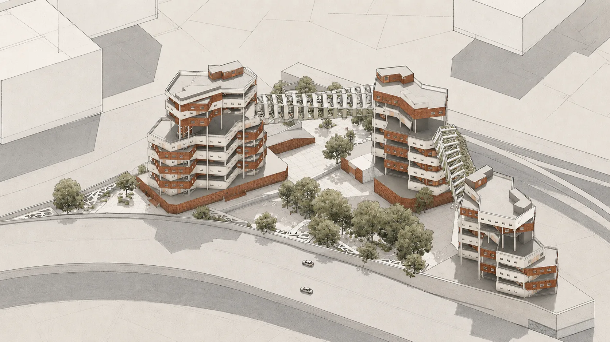
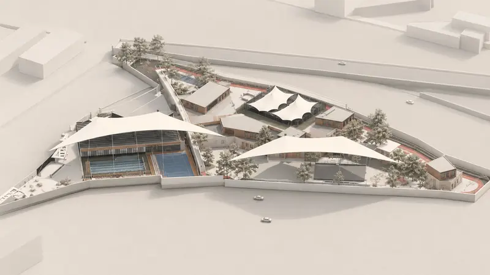

In Between
Concept
The main concern behind this project was the lack of social spaces and connection with nature in residential buildings. The primary design goal was to connect the three building volumes and create public spaces both at ground level and across the upper floors. This was achieved through an elevated pedestrian bridge that links the buildings and provides shared spaces for social interaction, walking, and experiencing nature.
The project was modeled in Autodesk Revit, and the renderings were enhanced using AI visualisation tools.
Project film
Plays when it scrolls into view. Pick a scene to jump straight to it.
Design Process
The design process began with shaping three building volumes according to the site geometry. The volumes were arranged to respond to the site’s form and functional requirements. Pedestrian bridges were then introduced to connect the three buildings at their designated public levels, creating a continuous elevated pathway that integrates circulation, social interaction, and shared public spaces throughout the complex.
Site Plan
The three building volumes are arranged according to the site geometry. Each residential unit benefits from abundant natural daylight and multiple balconies. The main entrance is located on the northern side of the site to minimize traffic congestion on the main highway. At ground level, landscape design and integrated green spaces create a welcoming public environment for walking, relaxation, and social interaction.
Drawings
Plans, sections and elevations. Click to open; click again or scroll to zoom.
Perspective
AI-assisted visualisations based on the original model, at the same views as the original portfolio.
Renders
Rendered from the Revit model in Twinmotion.
Model
More views
8 further views of the project, based on the original plans, sections and model. The original drawings remain authoritative.

Next project — 02